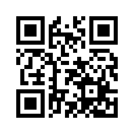

Как создать хорошую презентацию
© Игорь Григорьевич Пеймер, май 2025 г.
Подготовка
5 шагов к успешной презентации
- Глубоко погрузитесь в материал
- Запишите всё — создайте план (список) материала, который хотите представить
- Выделите самое важное
- Изучите свою аудиторию
- Репетируйте
Создание презентации
Слайды простые
обилие элементовпереплетение линийнагромождение мелких деталейсложный фон
Количество слов
- 3-5 слов в заголовках
- короткие описания
- максимально простые формулировки
Фотографии
- Качество HD
- Разрешение ≥ 720р (1280х720)
- Источник изображения
Диаграммы
Элемент ради элемента — это плохо.
Принцип «воздуха»
Очень важно
- Шаблоны
- Шрифты
- Цвета
- Грамотная вёрстка
Звуковые эффекты
При проведении презентации
- Не читайте с листа
- Замедляйтесь
- Не сводите выступление к озвучиванию слайдов
Общая теория

изображение из открытых истоников
Ключевая цель

изображение из открытых истоников
Самая важная проблема аудитории
- Как эффективно организовать взаимодействие с клиентами и повысить продажи?
- Можно ли избежать рисков “исчезновения” важной коммерческой информации и т.д.
- Как сделать работу менеджеров прозрачной?
- и т.д.

изображение из открытых истоников
Структура презентации
- Введение (или экспозиция): приветствие, краткое определение темы, подводка к основной проблеме
- Определение проблемы целевой аудитории (или завязка): выделение главной «боли» аудитории
- Аргументация выгод и преимуществ предложения (или развитие действий)
- Закрытие возражений целевой аудитории (или развитие действий)
- Ваше решение проблемы целевой аудитории (или кульминация): определение ключевого предложения, которое поможет аудитории решить конкретную «боль»
- Призыв к действию (или развязка): информация о том, что должна сделать аудитория
Структура презентации компании
- выгодно презентовать себя потенциальным клиентам и партнерам
- сообщить о направлении своей деятельности и спектре услуг или продуктов
- сформировать имидж надежной и стабильной фирмы
- Создать образ экспертов
- "Втереться в доверие" к аудитории
- "Именно вы способны решить их проблемы"
- Правильный «ракурс» подачи информации
Блок 1.

изображение из открытых истоников
Блок 2.

изображение из открытых истоников
Блок 3.

изображение из открытых истоников
Блок 4.
изображение из открытых истоников
Блок 5.

изображение из открытых истоников
Блок 6.

изображение из открытых истоников
Блок 7.

изображение из открытых истоников
Презентация продукта/услуги
Блок 1.

изображение из открытых истоников
Блок 2.

изображение из открытых истоников
Блок 3.
изображение из открытых истоников
Блок 4.

изображение из открытых истоников
Блок 5.
изображение из открытых истоников
Презентация стартапа
- Небольшой объем (до 10-15 слайдов), на выступление отводиться не более 10 минут
- Краткость изложения сути проекта
- Логичность повествования
- Информативность и структурированность
Блок 1.
изображение из открытых истоников
Блок 2.

изображение из открытых истоников
Блок 3.

изображение из открытых истоников
Блок 4.
изображение из открытых истоников
Блок 5.
изображение из открытых истоников
Блок 6.

изображение из открытых истоников
Сколько стоит презентация
Фрилансеры
от 500₽ за слайд,
презентация от 5000₽ до 25000₽.
Общий уровень работ средний, либо ниже среднего.
Где найти фрилансера?
- биржа фриланс-услуг;
- телеграм каналы по фрилансу;
«Авито»
Дизайн-студия
от 1500₽ до 3000₽ за слайд,
презентация от 25000₽ до 100000₽.
Крупное агентства
от 50000₽
Где заказать презентацию
- Сделать самому
- Фриланс
- Небольшая дизайн-студия
- Студия визуальных коммуникаций
Успешная презентация
- грамотное оформление
- тренировки
- уверенность спикера во время выступления
Более подробную информацию можно получить на дистанционных курсах
ООО "НВС"
+7 (978) 764-39-11
courses@hbc-soft.ru